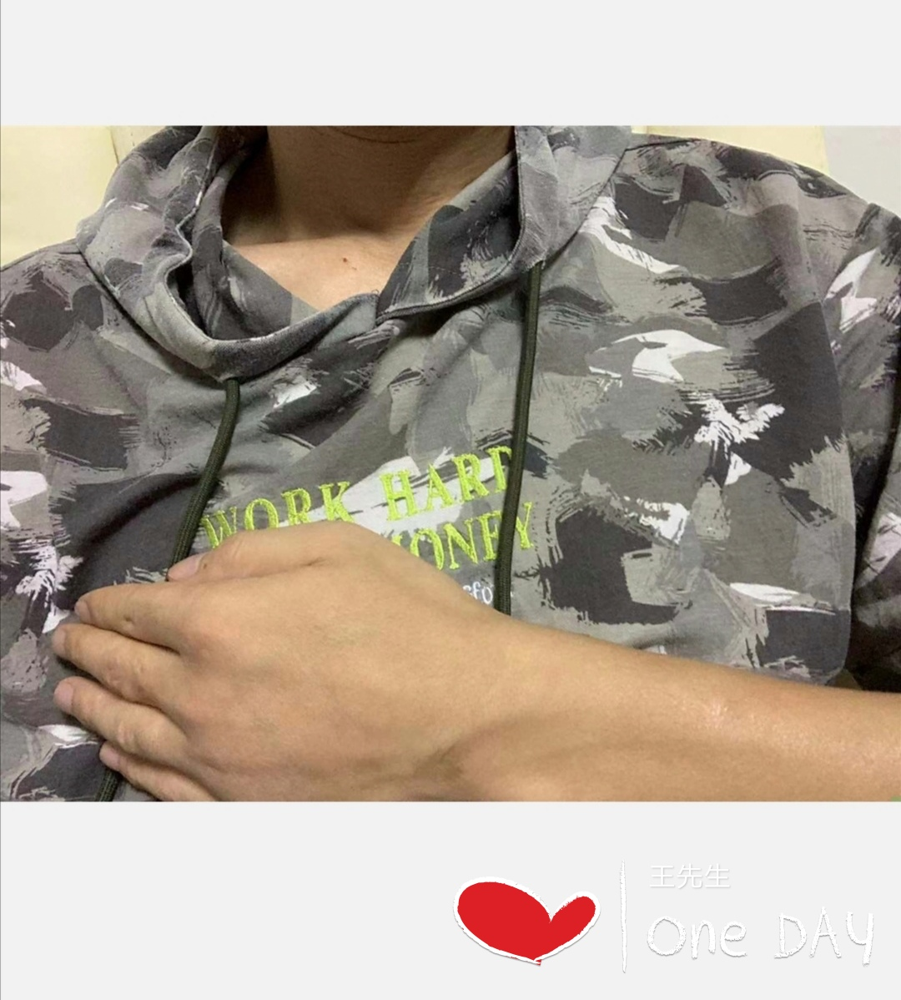
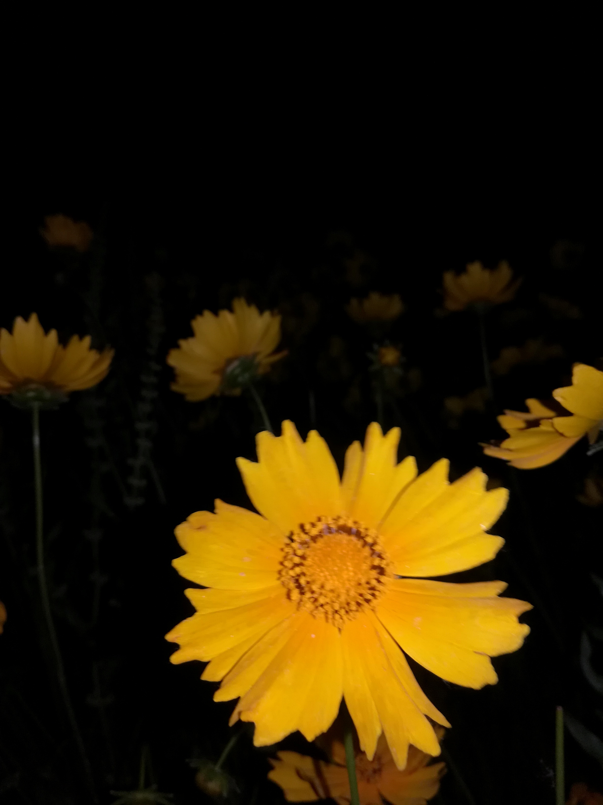
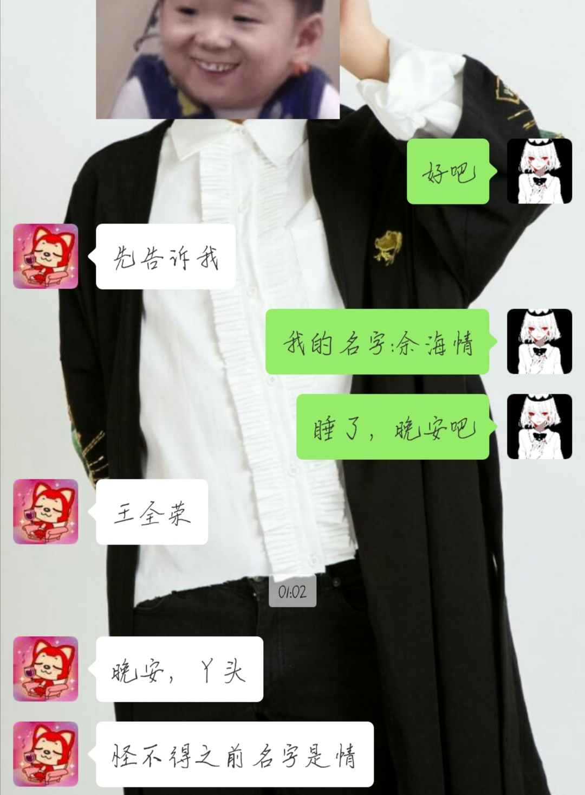

山楂树之恋



我的山楂树之恋
只有和你才会纯洁
可以丢弃我的底线
锁定与你的是我的视线
我的山楂树之恋
永远站在你的身边
我保证我的爱不会变
共享
永恒时间
像蝴蝶起舞翩翩
每次懊恼在于相见恨晚
不管相隔的距离是长
或是短
能在一起的时候不要快只想慢
想和你有个孩子
围着你团团转
世界变化不停
人潮川流不息
不在乎沉淀你肩膀上的经历
让你少份畏惧
还你一颗少女心
有种超凡动力是为你而打拼
爱你的坦诚
像一面清澈的湖水
就算眼睛肿了我也觉得世上你最美
许愿十年之后你在我的枕边谁
我用我的嘴巴抚平你一天的疲惫
心里总有期待所以过的度日如年
每天会关注你生活的片片面面
你说心里话的时候我像在充电
不理睬的时候我只能自己去找空间
我的山楂树之恋
只有是和你才会纯洁
可以丢弃
我的底线
锁定与你的是我视线
我的山楂树之恋
永远站在你的身边
我保证我的爱不会变
共享
永恒时间
像蝴蝶起舞翩翩
你的喜好你的习惯
你爱吃的我都记着
你爱的高冷我做不来
可以逐渐适应着
我不会
你没睡我不睡
即使第二天和你在一起会很疲惫
过的自由自在
美丽置身事外
陪你走路回家在每个
All day all night
也不能深陷情海
为了你的那一半
用太多的精力
因为上天他自有
安排
你是一只飞鸟
飞上我的树梢
从此我乏味的生活
变得热闹
我知道
你会为我停留
时间也会随之
而过的很久
说什么好
念什么糟
行如此情
却无从知晓
我怕来不及
我怕保不齐
山楂树下站的我和你
我的山楂树之恋
只有是和你才会纯洁
可以丢弃
我的底线
锁定与你的是我视线
我的山楂树之恋
永远站在你的身边
我保证我的爱不会变
共享
永恒时间
像蝴蝶起舞翩翩
老公，宝贝爱你呦
非常非常的喜欢你
很庆幸
我遇到的第一个就是你
肯定是我上辈子拯救了银河系
不然怎么会遇到你呢
❤ ❤ ❤
❤ ❤ ❤
❤ ❤ ❤